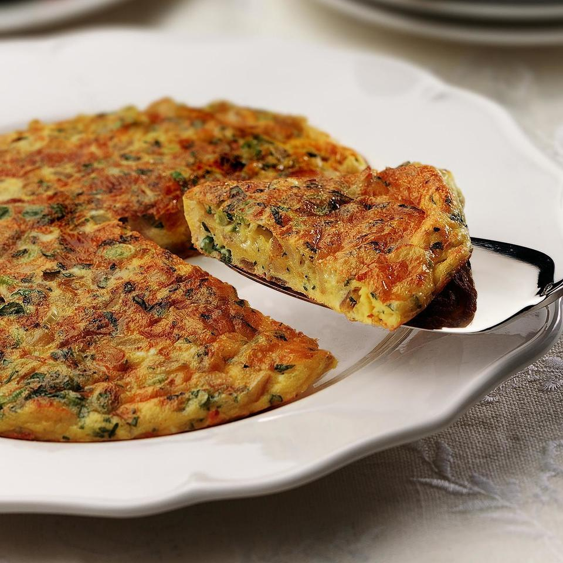

Spanish Potato Omelette

La tortilla de patatas, de papas o tortilla española es una tortilla u omelet a la que se le agrega patatas troceadas.
Se trata de uno de los platos más conocidos y emblemáticos de la cocina española, siendo un producto muy popular que se puede encontrar en casi cualquier bar o restaurante del país.
La tortilla de papa es dios. Punto.
Ingredientes:
- ½ cup olive oil
- ½ pound potatoes, thinly sliced
- salt and pepper to taste
- 1 large onion, thinly sliced
- 4 eggs
- 2 tomatoes - peeled, seeded, and coarsely chopped
- 2 green onions, chopped
Steps:
-
In a large frying pan or skillet, heat olive oil over medium-high heat. Sprinkle potatoes lightly with salt and pepper. Cook until golden brown and crisp.
-
Once the potatoes are golden, stir in the onions. Cook, stirring occasionally, until onions soften and begin to brown.
-
Meanwhile, beat eggs together with salt and pepper. Pour eggs into pan and stir gently to combine. Reduce heat to low and cook until eggs begin to brown on the bottom.
-
Loosen bottom of omelet with a spatula, invert a large plate over the pan, and carefully turn the omelet out onto it.
Slide the omelet back into the pan with the uncooked side down. Cook until eggs are set. Garnish omelet with tomato and green onion and serve warm.